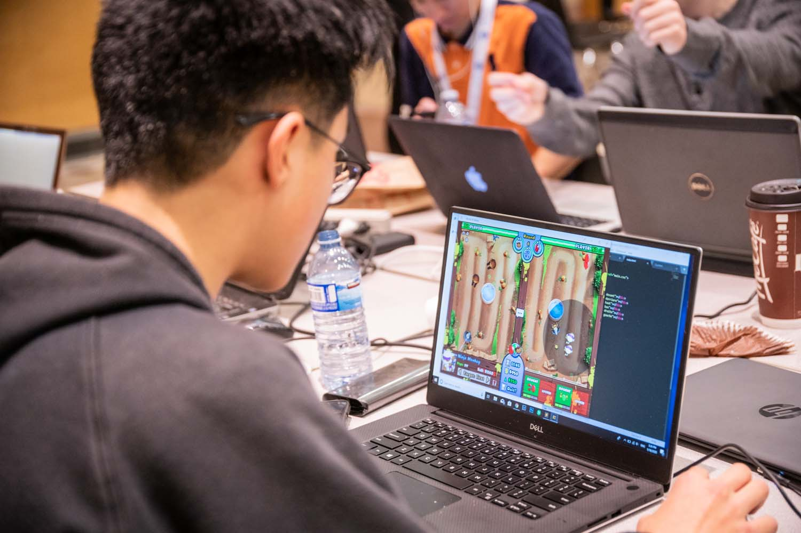

L'élève derrière le projet
Léon Zheng
Mon projet intégrateur

Mon projet intégrateur
J'ai cherché à intégrer un de mes passions, la programmation, dans un travail scolaire. Bien sûr, les opportunités étaient limitées puisque la majorité de nos travaux étaient sous forme de papier. Cependant, le projet intégrateur, qui offre aux élèves une plus grande variété de choix pour le travail, se présentait en secondaire 4. C'était l'occasion parfaite pour me pratiquer en codage. En plus de ça, je pouvais faire livrer un message à plusieurs à propos d'une situation qui me préoccupe beaucoup: le vapotage.